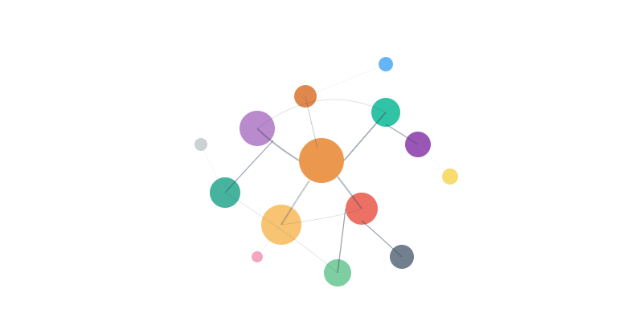

Writing · Musing
Preserving Human Idiosyncrasy: Generative Learning in the Age of Generative AI
When our language is quietly standardized by algorithms, what happens to the idiosyncratic connections that make learning ours?
A quiet shift is happening in how we speak and write, and most of us don’t even notice it. Words like “delve,” “underscore,” and “realm” are suddenly everywhere in academic writing and speech. “You sound like ChatGPT,” before you started to notice.
For example, Kobak et al. (2024) analyzed over 14 million PubMed abstracts from 2010–2024 and found certain words showed abrupt frequency increases following the release of ChatGPT. A more recent analysis of 280,000 YouTube videos showed a similar shift to reflect the AI’s flavor (Yakura et al., 2025).
But this isn’t just about linguistic trends. It represents a fundamental threat to how humans learn and make meaning.
The ‘Heart’ of Learning
Educational psychologist Merlin Wittrock identified something crucial about authentic learning half a century ago. He argued that genuine understanding occurs when learners create:
“semantic and distinctive idiosyncratic associations between stimuli and stored information.”
Wittrock (1974), p. 89
The word “idiosyncratic” isn’t academic jargon—it’s the key to learning with understanding. When you truly understand something, you connect it to your unique knowledge, experiences, and ways of thinking. Your explanation of photosynthesis differs from mine because we bring different mental models, metaphors, and personal connections to the concept. This distinctiveness isn’t a bug in the learning system—it’s a feature.
Wittrock called this generative learning because learners actively generate their own meaningful connections rather than passively receiving information. The learner—and their idiosyncrasy—plays key roles in the processes of generating learning.

Despite these shifts, what remains true, I believe, is that human idiosyncrasy matters for learning with understanding.
The Homogenization Problem
But what happens when our language—the very medium through which we express these idiosyncratic connections—becomes standardized by algorithms?
Recent studies reveal the scope of this challenge. Multiple studies have described a “creep-in factor” where AI influences human language below our level of perception. Juzek and Ward (2025) found evidence that humans exhibit preferences for AI-favored vocabulary even when they don’t realize it—a feedback loop where AI learns from human preferences and then influences those same preferences.
The Educational Tension
This creates a profound dilemma for educators. When students write about “delving into complex realms” and “underscoring pivotal insights,” are they demonstrating genuine learning or unconsciously echoing AI’s preferred vocabulary?
The stakes are definitely higher than plagiarism detection. If students lose their distinctive ways of expressing ideas, they may also lose the personal connections that make learning meaningful and transferable.
Preserving Human Meaning-Making: Open Questions
- How do we design AI tools that enhance human expression rather than homogenize it?
- How can we better value the idiosyncrasy of student expression as an indicator of authentic learning?
- How do we preserve cognitive diversity in an age of algorithmic standardization?
The future of education may depend on how we answer these questions.
References
- Juzek, T. S., & Ward, Z. B. (2025). Why does ChatGPT “delve” so much? Proceedings of COLING 2025, 6397–6411.
- Kobak, D., González-Márquez, R., Horvát, E.-Á., & Lause, J. (2025). Delving into ChatGPT usage in academic writing through excess vocabulary. arXiv:2406.07016.
- Wittrock, M. C. (1974). Learning as a generative process. Educational Psychologist, 11(2), 87–95.
- Yakura, H., et al. (2025). Empirical evidence of large language model’s influence on human spoken communication. arXiv:2409.01754.
Authorship: written with the help of Claude and thoroughly edited by me.